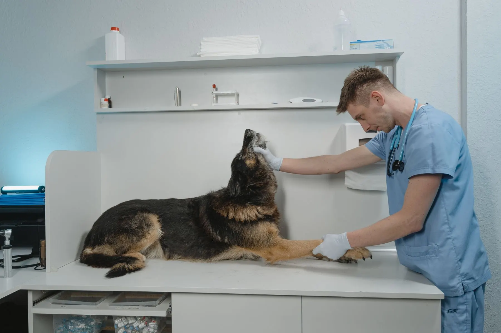
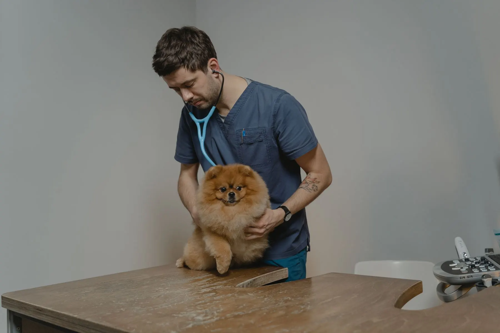
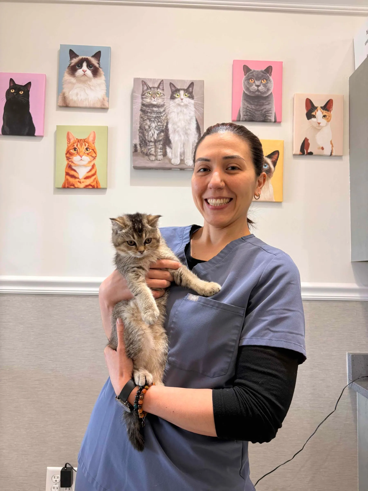
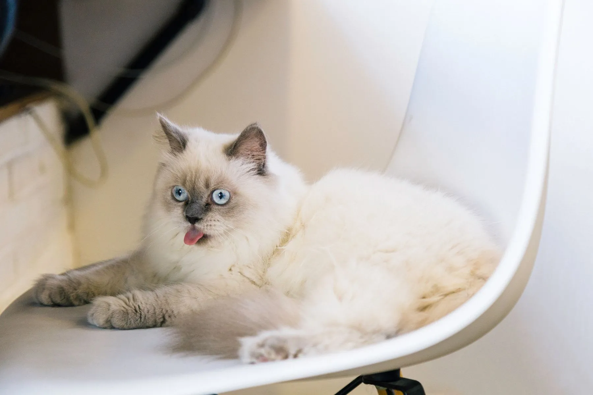
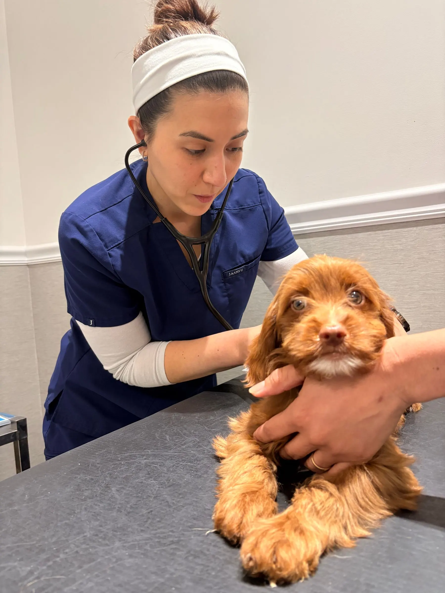
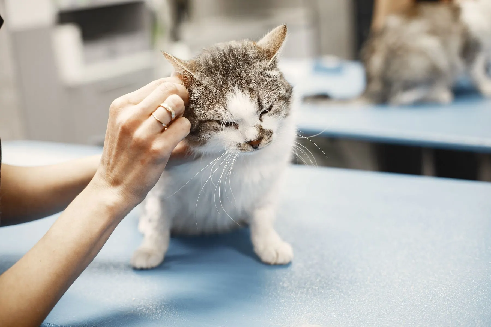
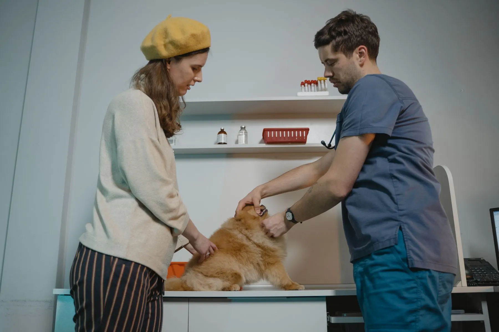

Consulta
Exame clínico completo, com tempo pra tirar dúvidas
AgendarModelo de site feito pela Orbi · nome e endereço fictícios Quero um assim
Clínica veterinária no Jardim Botânico. Consultas, vacinas, exames e cirurgias, com o seu pet atendido sem pressa e você sabendo de tudo.
Seg a sex, 8h às 20h · sáb, 8h às 14hAv. das Palmeiras, 1200

Com nome, história e jeito próprio.
Escuta, exame e carinho.
Da vacina à consulta.
A gente avisa no seu WhatsApp quando chegar a hora da próxima dose. Você não precisa lembrar de nada.
Amparo VetOi! A V10 da Mel vence dia 12. Quer que eu já deixe um horário reservado?
Quero! Pode ser quinta às 10h?
Amparo VetCarteira de vacinação

Exame clínico completo, com tempo pra tirar dúvidas
Agendar
V10, antirrábica, gripe e giárdia, com lembrete
AgendarVermífugo, vacinas e orientação de alimentação
Agendar
Horário separado e sala calma, sem cachorro latindo
Agendar
Sangue, ultrassom e raio-X com resultado explicado
Agendar
Com avaliação pré-cirúrgica e acompanhamento
AgendarNada de entregar o pet no balcão e esperar notícia. A consulta é com você do lado, e cada exame é explicado antes e depois.

Escolha o atendimento, o dia e o horário. A clínica confirma pelo WhatsApp.
Pode e deve. Você acompanha o exame, vê o que o veterinário vê e sai com tudo explicado.
A carteirinha fica registrada aqui. Uns dias antes de cada dose, você recebe uma mensagem no WhatsApp com a data e um horário sugerido.
Chame antes de vir. A gente orienta o que fazer no caminho e já deixa a sala pronta para receber vocês.
Sim, em horário separado e numa sala calma, sem cachorro latindo do lado.
Av. das Palmeiras, 1200 · Jardim Botânico, Curitiba (endereço fictício)
Emergência: chame antes de vir, a gente orienta.